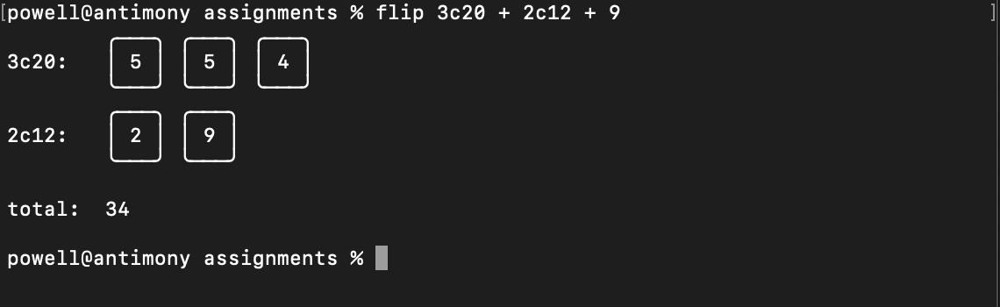
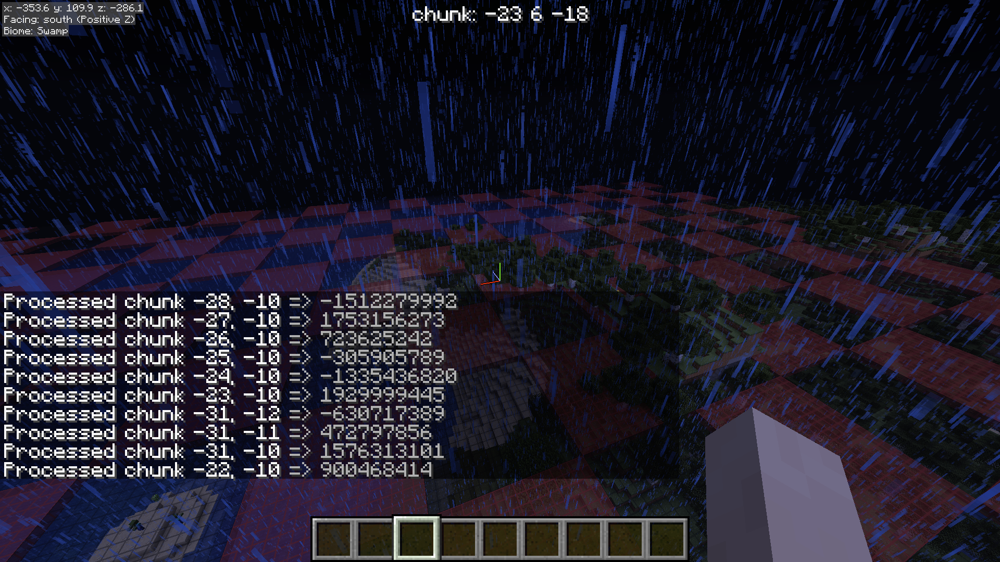
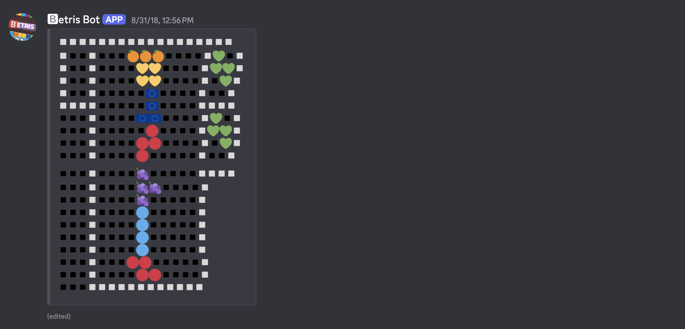

150 W Broad St Unit 727B, Athens, GA 30601
(404) 771-2230
business.de@dbeat.horse
I'm Powell, a CS major at UGA with a particular interest in functional programming,
elegant low-level optimizations, and language design. I enjoy nitty-gritty problem
solving using well-designed languages.
Education
Auburn → need to check
Computer Science → tranfered to UGA in 2023
UGA → need to check
Computer Science → 2026
Honors and Awards
Invited to Auburn Philosophy Luncheon
2020 (it was canceled due to the pandemic)
skills
Typescript
Rust
Elixir
C
C++
Java
Lua
x86 assembly (it's been hot minute)
VBA (please never again)
misc. nontrivial config languages + query languages (nix, graphql, powerquery m)
misc. oddball languages (applescript, stonescript, mcfunction, etc...)
Leadership and Experience
summer of 2020 and 2021
paid internship at Horizon River (frontend
development for angular webapp)
spring through fall of 2023, summer of 2024 and 2025
paid internship at Trelleborg Sealing Solutions
(lead programmer for a number of internal tools used by the Ft. Wayne branch)
Projects
coin-cli

simple dice-roller I used when playing D&D with friends. (yes, I said
dice roller — it's a long story, the telling of which demands that I
take on the impossible task of explaining to you "the anatomy of a coin".)
made with rust to learn its regex and rand crates.
datacore

a fairly extensive utility datapack that includes dependancy loading,
random number generation, simulated block lighting, HUD management,
structure generation, data storage, event triggers, and more.
shown above is a demo of determenistic pseudo-random number generation
tied to world seed and chunk coordinate being triggered whenever a chunk
is newly generated.
betris bot

a playable version of tetris made with a discord bot hosted on nodejs.
(the grid is misaligned because modern discord has changed emoji rendering.)
fully implemented SRS, the rotation system used by modern tetris that allows
for t-spins and the like.